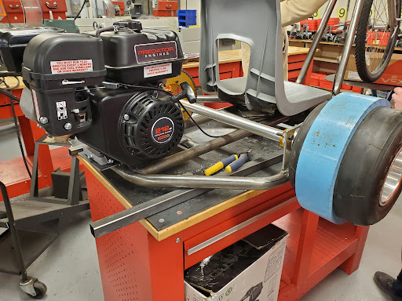

About Me!
Here I showcase my projects, hobbies, and interests.
My Hobby: Creating/Building Things
I am passionate about creating anything and everything. Below are some of the projects I’ve worked on:
- Drift Trike - Built a fully functioning drift trike for my high school capstone engineering course.
- Commercial Building Design - Designed a commercial building in a CAD Architecture course during high school.
- 15+ Desktops Built - A hobby of mine is building desktops. I enjoy helping friends plan and build their rigs.
